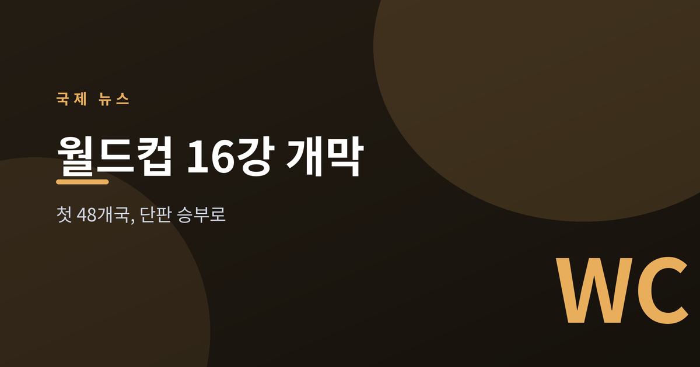
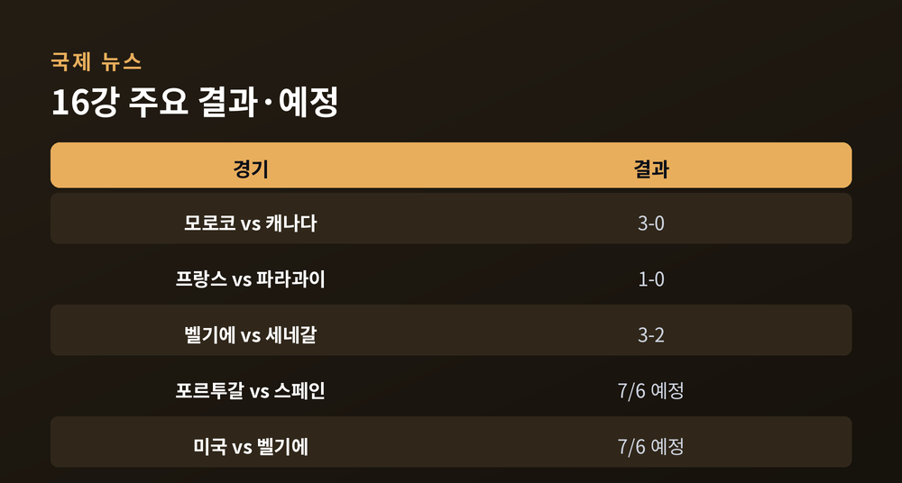
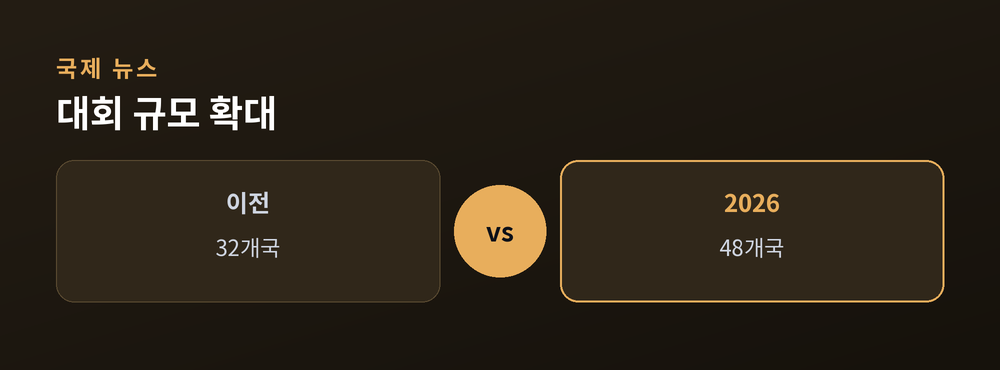
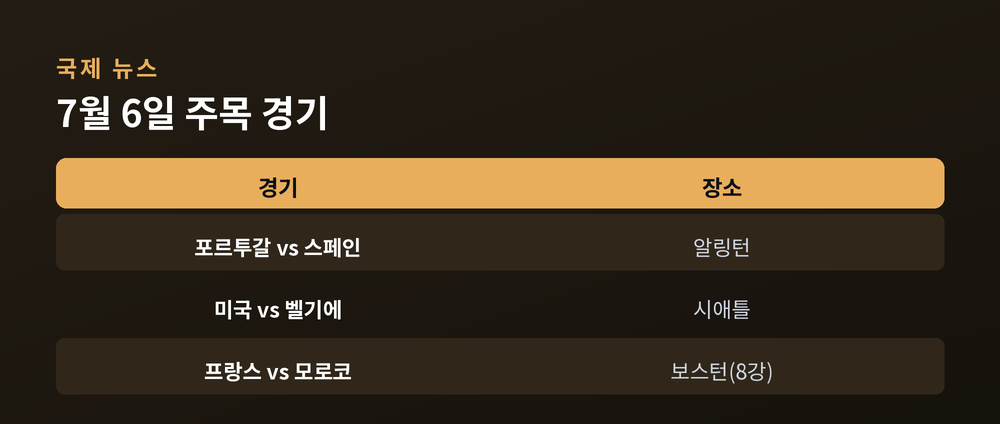

토너먼트가 시작됐다 — 첫 48개국 대회, 이제 단판 승부로

2026 FIFA 월드컵이 조별리그와 32강을 지나 16강 토너먼트에 들어섰습니다.
미국·캐나다·멕시코 세 나라가 함께 여는 첫 대회이자, 사상 처음으로 48개국이 겨루는 무대입니다.
이번 글에서는 지금 벌어지는 국면과 그 의미, 남은 일정을 담백하게 정리해 보겠습니다.
대회는 6월 11일 개막했고, 결승은 7월 19일로 예정돼 있습니다.
현재는 16강 토너먼트가 현지 시간 7월 4일부터 7일까지 진행 중입니다.
여기서부터는 비기면 탈락하는 단판 승부입니다.
이미 몇 경기의 결과가 나왔습니다.
모로코가 캐나다를 3-0으로 눌렀고, 프랑스는 파라과이를 1-0으로 제쳤습니다.
프랑스는 음바페의 후반 페널티킥 한 방으로 8강에 올랐습니다.
벨기에는 세네갈을 연장 끝에 3-2로 뒤집으며 살아남았습니다.

이번 대회는 규모부터 다릅니다.
예전엔 32개국이 본선을 치렀습니다. 지금은 48개국입니다.
참가국, 경기 수, 개최 도시가 모두 역대 최대로 늘었습니다.
한 나라가 아니라 세 나라가 함께 여는 대회라는 점도 새롭습니다.
그만큼 이동과 물류, 지역 경제에 미치는 파장도 폭넓습니다.
개최국 미국이 16강에서 보스니아를 2-0으로 꺾고 8강 문을 두드리는 장면은 홈 이점을 상징합니다.

7월 6일에는 굵직한 경기가 몰려 있습니다.
포르투갈과 스페인이 텍사스 알링턴에서 맞붙는 이베리아 더비가 예정돼 있습니다.
같은 날 시애틀에서는 개최국 미국이 벨기에와 8강을 놓고 겨룹니다.
먼저 8강을 확정한 프랑스는 모로코와 만납니다.
여기서부터는 한 경기의 결과가 트로피의 향방을 바꿉니다.

정리하면 이렇습니다.
가장 크게 열린 월드컵이 이제 가장 좁은 문 앞에 섰습니다.
"48개국의 축제는 끝났고, 이제부터는 단 한 번의 승부다."
트로피를 누가 들지, 남은 경기들이 답할 것입니다.